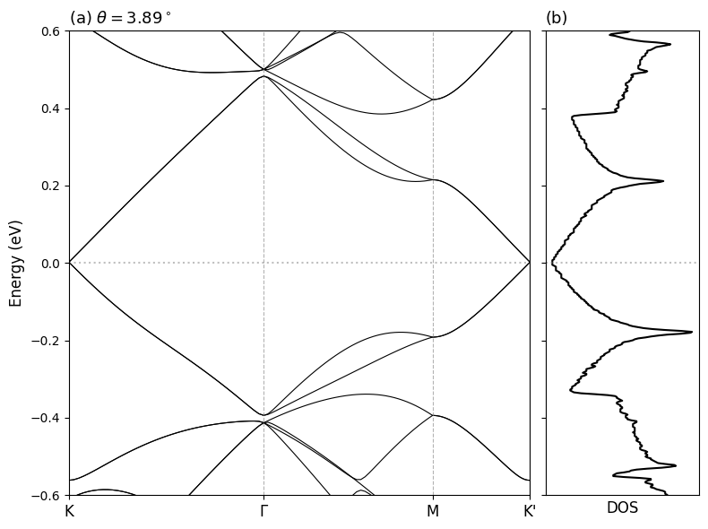

Optical absorption in twisted bilayer graphene (Koshino et al.)
This notebook presents a clean implementation based on the paper:
M. Koshino and E. McCann
Optical absorption in twisted bilayer graphene (2013)
https://journals.aps.org/prb/abstract/10.1103/PhysRevB.87.205404
Code Author
Sarbajit Mazumdar
Doctoral Researcher, Julius-Maximilians-Universitat Wurzburg
Email: sarbajit.mazumdar@uni-wuerzburg.de
Scope
- Build periodic commensurate TBG lattice.
- Use Moon-Koshino-inspired Slater-Koster hopping.
- Compute and plot bands along \(K \to \Gamma \to M \to K^{\prime}\).
- Compute DOS from a 2D sampling of the irreducible Brillouin-zone triangle.
- Plot a combined band-structure and DOS figure.
Imports
import numpy as np
import matplotlib.pyplot as plt
from scipy.linalg import eigvalsh
from tqdm import tqdm, trange
from moirepy import BilayerMoireLattice, HexagonalLayer
Build commensurate TBG lattice
For theta ~ 3.89 deg, use (m,n)=(8,9). In this MoirePy setup:
- lower layer: ll=(8,9)
- upper layer: ul=(9,8)
lattice = BilayerMoireLattice(
latticetype=HexagonalLayer,
ll1=8, ll2=9,
ul1=9, ul2=8,
n1=1, n2=1,
pbc=True,
verbose=True,
)
# Output:
# twist angle = 0.0679 rad (3.8902 deg)
# 434 cells in upper lattice
# 434 cells in lower lattice
Tight-binding parameters (Moon-Koshino)
Paper values used:
We apply the same style cutoff:
a_graphene = 1.0
a0 = a_graphene / np.sqrt(3.0)
d0 = 0.335 / 0.246
delta0 = 0.184
VPP_PI0 = -2.7
VPP_SIGMA0 = 0.48
r3d_cut = 4.0 * a0
inter_layer_radius = 2.5
# Build bond/connection lists once.
lattice.generate_connections(inter_layer_radius=inter_layer_radius)
Hopping functions
intralayer_hopping: nearest-neighbor graphene hopping.interlayer_hopping: Slater-Koster-style distance-dependent hopping.
def intralayer_hopping(pos_i, pos_j, R, type_i, type_j, lattice, **kwargs):
"""
MoirePy's built-in hexagonal layer generates nearest-neighbor intralayer bonds.
Use dominant nearest-neighbor graphene hopping.
"""
rij = pos_i - (pos_j + R)
dist = np.linalg.norm(rij, axis=1)
vals = np.zeros_like(dist, dtype=np.float64)
nn_mask = np.isclose(dist, a0, atol=1e-6, rtol=1e-5)
vals[nn_mask] = VPP_PI0
return vals
def interlayer_hopping(pos_i, pos_j, R, type_i, type_j, lattice, **kwargs):
"""
Moon-Koshino-inspired Slater-Koster interlayer hopping.
"""
lateral = pos_i - (pos_j + R)
rho = np.linalg.norm(lateral, axis=1)
d = np.sqrt(rho**2 + d0**2)
vals = np.zeros_like(d, dtype=np.float64)
mask = d <= r3d_cut
if not np.any(mask):
return vals
dm = d[mask]
cos2 = (d0 / dm) ** 2
Vpp_pi = VPP_PI0 * np.exp(-(dm - a0) / delta0)
Vpp_sigma = VPP_SIGMA0 * np.exp(-(dm - d0) / delta0)
vals[mask] = Vpp_pi * (1.0 - cos2) + Vpp_sigma * cos2
return vals
Real-space Hamiltonian
H_real = lattice.generate_hamiltonian(
tll=intralayer_hopping,
tuu=intralayer_hopping,
tul=interlayer_hopping,
tlu=interlayer_hopping,
tlself=0.0,
tuself=0.0,
data_type=np.complex128,
)
print("Hamiltonian dimension =", H_real.shape)
# Output:
# Hamiltonian dimension = (868, 868)
High-symmetry path in moire Brillouin zone
Path used: \(K \to \Gamma \to M \to K^{\prime}\).
def reciprocal_vectors(a1, a2):
area = a1[0] * a2[1] - a1[1] * a2[0]
b1 = 2.0 * np.pi * np.array([a2[1], -a2[0]]) / area
b2 = 2.0 * np.pi * np.array([-a1[1], a1[0]]) / area
return b1, b2
L1 = lattice.mlv1
L2 = lattice.mlv2
G1, G2 = reciprocal_vectors(L1, L2)
Gamma = np.array([0.0, 0.0])
K = (2.0 * G1 + G2) / 3.0
M = (G1 + G2) / 2.0
Kp = (G1 + 2.0 * G2) / 3.0
def interpolate_path(points, n_per_segment=40):
xs = [0.0]
klist = [np.array(points[0], dtype=float)]
ticks = [0.0]
for p0, p1 in zip(points[:-1], points[1:]):
p0 = np.array(p0, dtype=float)
p1 = np.array(p1, dtype=float)
for j in range(1, n_per_segment + 1):
t = j / n_per_segment
k = (1.0 - t) * p0 + t * p1
xs.append(xs[-1] + np.linalg.norm(k - klist[-1]))
klist.append(k)
ticks.append(xs[-1])
return np.array(klist), np.array(xs), np.array(ticks)
k_path, x_axis, tick_pos = interpolate_path([K, Gamma, M, Kp], n_per_segment=40)
tick_labels = ["K", r"$\Gamma$", "M", "K'"]
print("Number of k-points:", len(k_path))
# Output:
# Number of k-points: 121
Compute band structure along the high-symmetry path
This cell evaluates eigenvalues of \(H(k)\) along \(K \to \Gamma \to M \to K^{\prime}\).
bands = []
for kvec in tqdm(k_path, desc="Calculating bands"):
phase = lattice.get_phase(kvec)
Hk = H_real.multiply(phase)
vals = eigvalsh(Hk.todense())
bands.append(vals)
bands = np.array(bands)
# Output:
# Calculating bands: 0%| | 0/121 [00:00<?, ?it/s]
# Output:
# Calculating bands: 100%|██████████| 121/121 [00:35<00:00, 3.38it/s]
Compute DOS on the irreducible Brillouin-zone triangle
This cell samples the triangle and builds a smoothed DOS in the target energy window.
from scipy.ndimage import gaussian_filter1d
Gamma = np.array([0.0, 0.0])
M_pt = 0.5 * G1
K_pt = (2.0 / 3.0) * G1 + (1.0 / 3.0) * G2
N_side = 60
all_energies = []
for i in tqdm(range(N_side), desc="Calculating DOS"):
for j in range(i + 1):
u = i / (N_side - 1)
v = j / (N_side - 1)
kvec = (1.0 - u) * Gamma + (u - v) * M_pt + v * K_pt
phase = lattice.get_phase(kvec)
Hk = H_real.multiply(phase)
vals = eigvalsh(Hk.todense())
mask = (vals >= -0.7) & (vals <= 0.7)
all_energies.extend(vals[mask])
all_energies = np.array(all_energies)
e_min, e_max = -0.6, 0.6
energy_grid = np.linspace(e_min, e_max, 500)
dos_raw, _ = np.histogram(all_energies, bins=energy_grid)
bin_centers = (energy_grid[:-1] + energy_grid[1:]) / 2.0
dos_smooth = gaussian_filter1d(dos_raw, sigma=1.25)
# Output:
# Calculating DOS: 100%|██████████| 60/60 [05:08<00:00, 5.15s/it]
Plot band structure and DOS
The final figure shows the band structure (left) and DOS (right) using the same energy axis.
fig, (ax1, ax2) = plt.subplots(
1,
2,
figsize=(8, 6),
sharey=True,
gridspec_kw={"width_ratios": [3, 1]},
)
ax1.plot(x_axis, bands, "k", lw=0.8)
for xc in tick_pos[1:-1]:
ax1.axvline(xc, color="gray", ls="--", lw=0.8, alpha=0.6)
ax1.set_xticks(tick_pos)
ax1.set_xticklabels(tick_labels, fontsize=12)
ax1.set_ylabel("Energy (eV)", fontsize=12)
ax1.set_title(r"(a) $\theta = 3.89^\circ$", loc="left", fontsize=13)
ax1.set_xlim(x_axis[0], x_axis[-1])
ax2.plot(dos_smooth, bin_centers, color="black")
ax2.set_xlabel("DOS", fontsize=12)
ax2.set_title("(b)", loc="left", fontsize=13)
ax2.set_xticks([])
for ax in (ax1, ax2):
ax.axhline(0.0, color="gray", linestyle=":", alpha=0.5)
ax.set_ylim(e_min, e_max)
plt.tight_layout()
plt.subplots_adjust(wspace=0.05)
